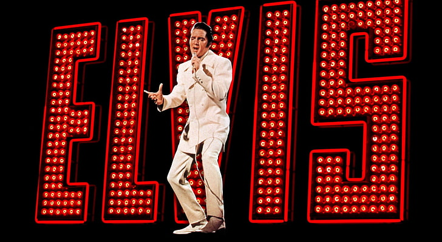

O fim de Presley
No dia 16 de agosto de 1977 Elvis Presley faleceu em consequência de um ataque cardíaco. Após sua morte em Memphis, em 16 de agosto de 1977, oito milhões de cópias de seus discos esgotaram-se em apenas cinco dias. Graceland, a suntuosa mansão do cantor na cidade, ainda hoje é local de peregrinação de seus admiradores.
Há 45 anos, em agosto de 1977, a biografia de Elvis Presley chegava ao fim de forma trágica, com a despedida do Rei do Rock após uma vida marcada por altos e baixos, polêmicas, sucessos e recordes.
Como muitos astros do rock, Elvis Presley morreu jovem, com apenas 42 anos, após um ataque cardíaco no banheiro no andar de cima de Graceland. Por décadas, presumiu-se que a morte de The King foi desencadeada por seu uso abusivo de medicamentos
prescritos. No entanto, um novo livro cuidadosamente pesquisado e não sensacionalista apresenta novas evidências afirmando que Elvis sempre morreria jovem, independentemente da fama e fortuna, por causa de seus problemas de saúde desde o nascimento.